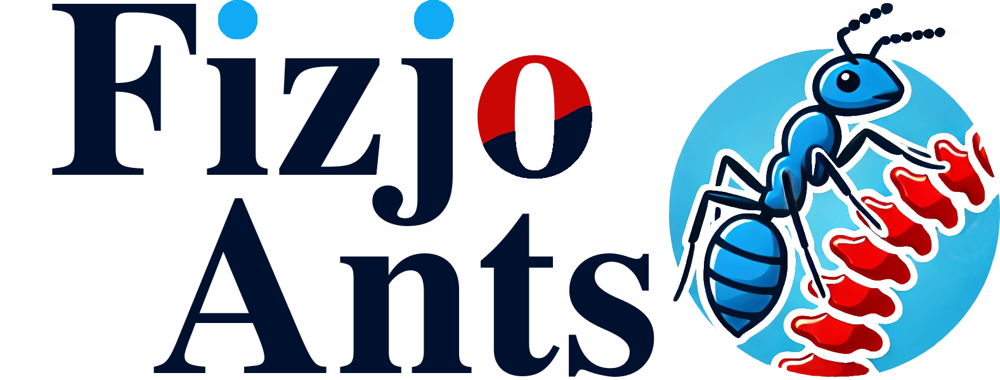
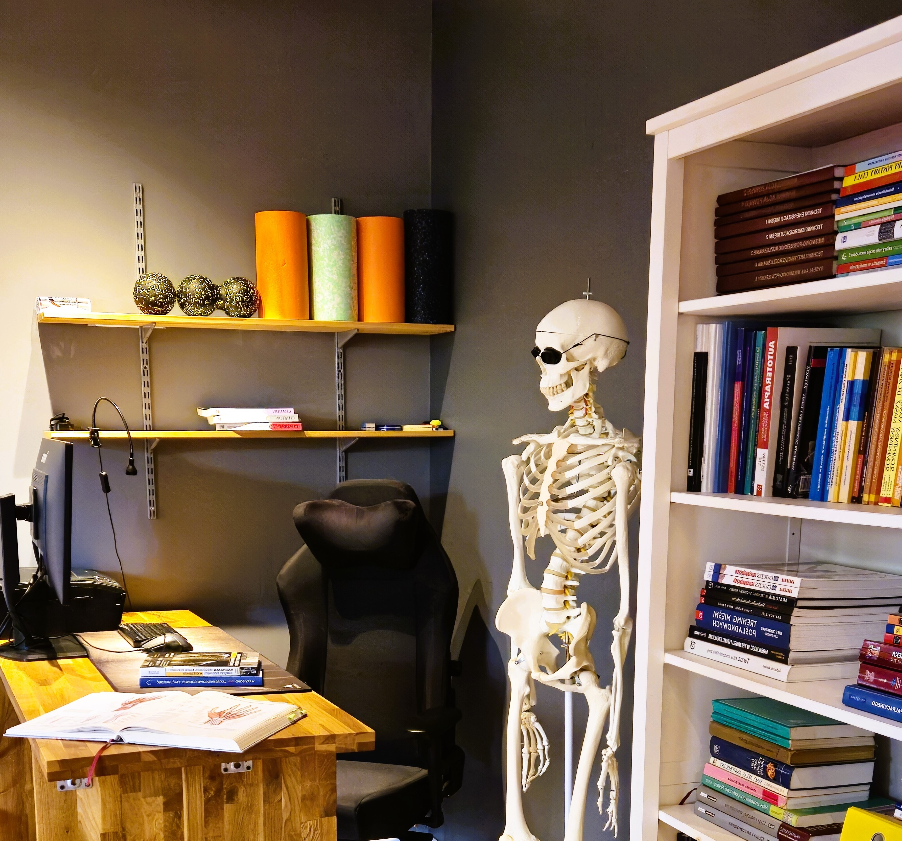
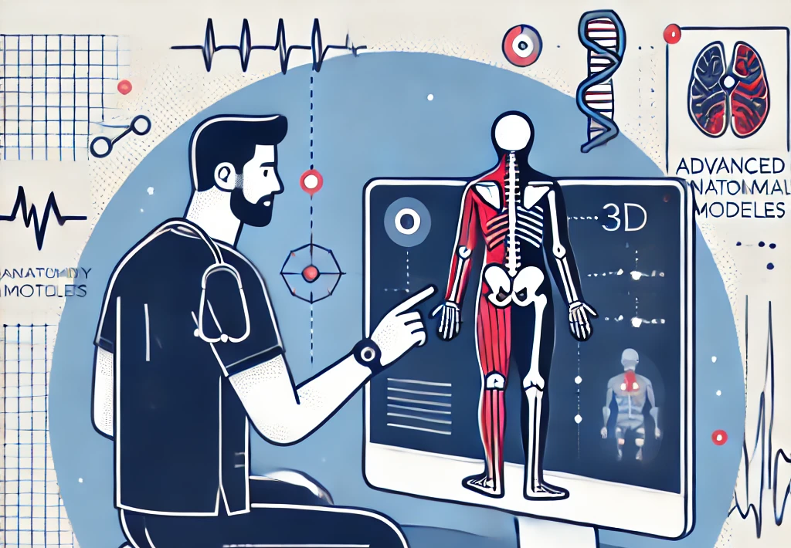
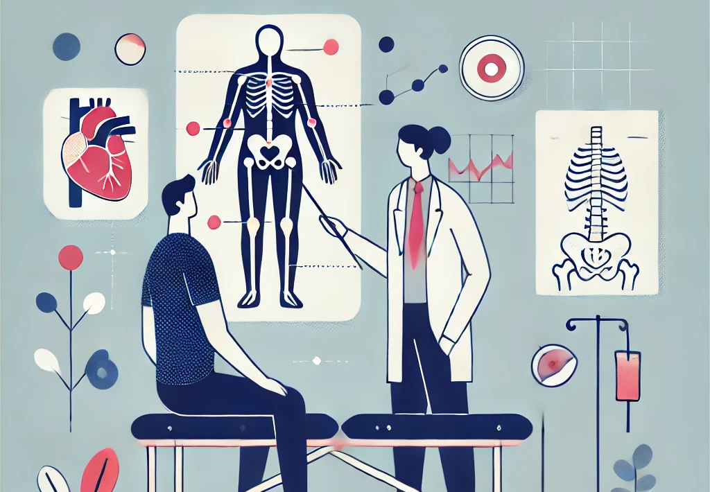
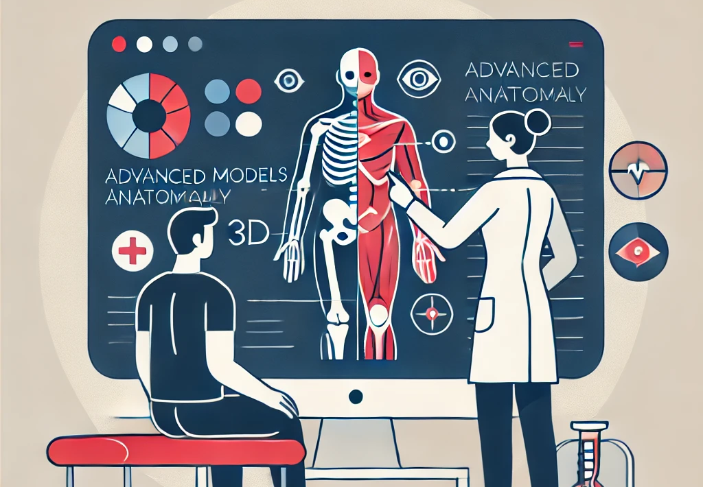
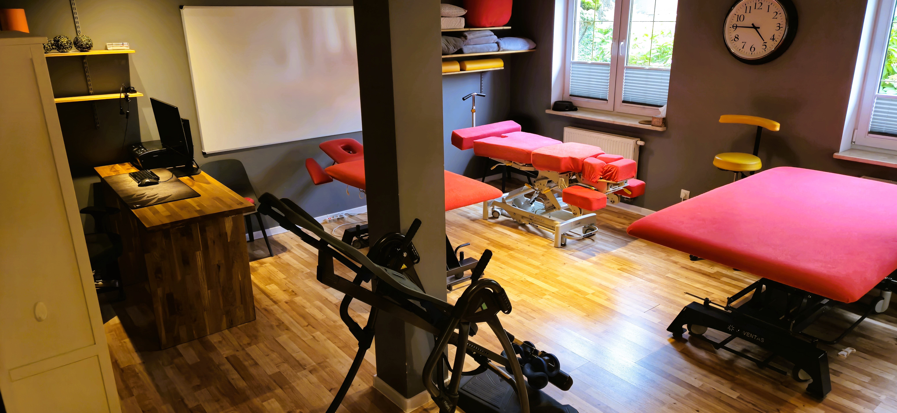
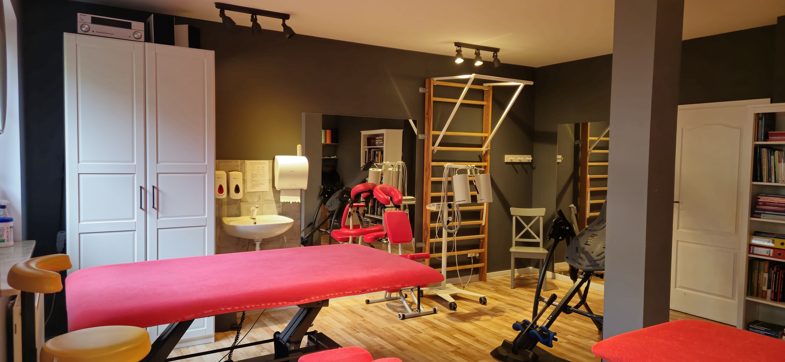
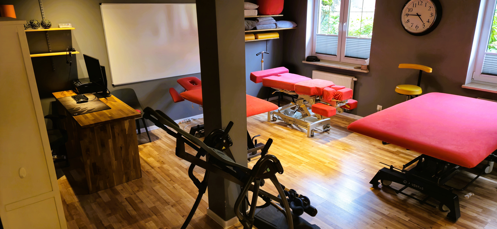
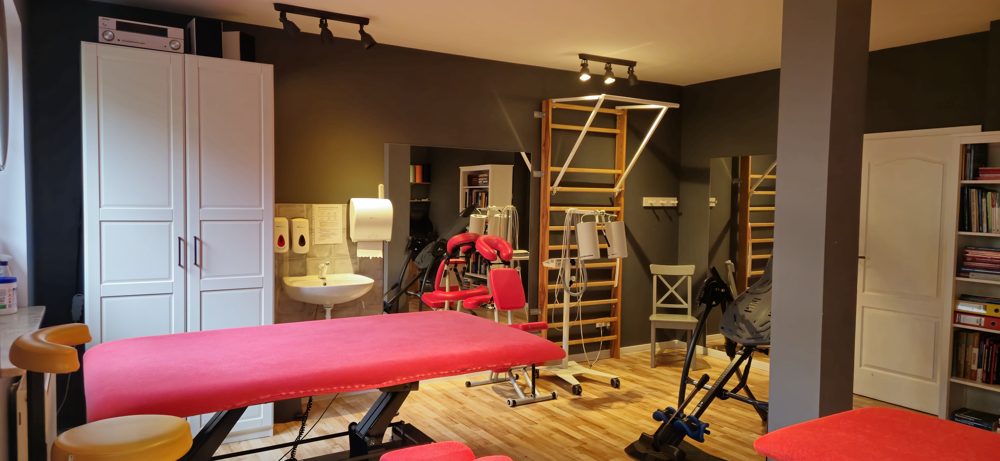
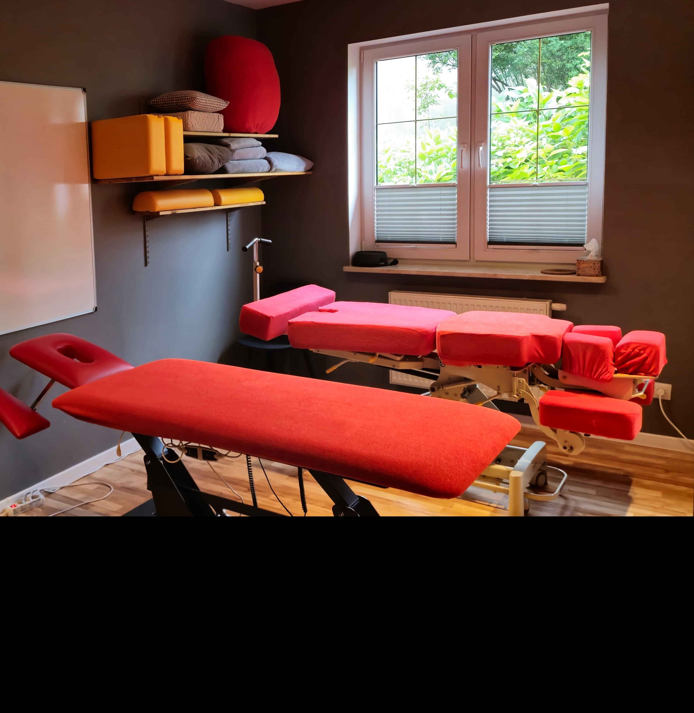

W FizjoANTS wierzymy, że klucz do sukcesu leży w współpracy, precyzji i niesłabnącym zaangażowaniu -
wartościach, które przywodzą na myśl zorganizowane i pracowite mrówki.
Nasza nazwa, FizjoANTS, nie jest przypadkowa. Odzwierciedla naszą filozofię działania, gdzie każdy członek
zespołu, niczym mrówka w mrowisku, odgrywa kluczową rolę w budowaniu zdrowia naszych pacjentów.
W FizjoANTS każdy detal ma znaczenia, a nasza wspólna praca ma na celu zapewnienie opieki na najwyższym
poziomie.

-
TerapiaprzeciwbólowaW FizjoANTS traktujemy ból nie tylko jako symptom, ale jako złożony problem wymagający wszechstronnego podejścia. Nasza Terapia Przeciwbólowa opiera się na precyzyjnej diagnozie, której celem jest zrozumienie źródła bólu i jego eliminacja. Zastosowanie indywidualnie dobranych metod terapeutycznych pozwala na skuteczne złagodzenie dolegliwości, przywracając pacjentom komfort życia i pełną sprawność. Dążymy do tego, aby każda interwencja przynosiła nie tylko ulgę, ale i długotrwałe rezultaty.
-
Bóle głowy
- Typu migrenowego
- Typu napięciowego
- Pourazowe bóle głowy
- Stresogenne, stresopochodne
- Trudne do zdiagnozowania i oporne do leczenia
-
Bóle brzucha i klatki piersiowej
- Bolesne miesiączkowanie
- Ból podczas stosunku
- Zamostkowe bóle klatki piersiowej
- Uczucie zatykania w klatce piersiowej oraz trudności z oddychaniem
-
Bóle kręgosłupa
- Zespoły przeciążeniowo bólowe mięśni szyji i karku
- Zespoły przeciążeniowo bólowe dolnego odcinka kręgosłupa
- Lumbago
- Nerwobóle
-
Bóle stawówBarku i ramienia
- Bóle spowodowane patologia ortopedyczną
- Bóle niewiadomego pochodzenia
-
Bóle stawówŁokcia i przedramienia
- Bóle spowodowane patologia ortopedyczną
- Bóle niewiadomego pochodzenia
-
Bóle stawówNadgarstka i ręki
- Bóle spowodowane patologia ortopedyczną
- Bóle niewiadomego pochodzenia
-
Bóle stawówBiodra, miednicy i uda
- Ból w pachwinie
- Zespół mięśnia gruszkowatego
- Zespół ciasnoty przedziałów powięziowych
- Ból mięśniowo- powięziowy dna miednicy
-
Bóle stawówKolana, łydki i piszczeli
- Bóle goleni u biegaczy
- Bóle niewiadomego pochodzenia
- Bóle spowodowane patologia ortopedyczną
-
Bóle stawówStopy i stawu skokowego
- Ból w dole pięty (ostroga piętowa)
- Ból śródstopia (metatarsalgia)
- Paluch sztywny (hallux rigidus)
- Nadwyrężenie pierwszego stawu śródstopiom-paliczkowego (palec boiskowy)
- Nerwiak Mortona (nerwiak międzypalcowy)
- Zespół nocnych kurczów łydek
-
Problemy specjalne
- Blizny, zrosty pooperacyjne i pourazowe
- Krwiaki i obrzęki limfatyczne
- Choroby reumatyczne
- Choroby neurologiczne oraz neurodegeneracyjne
- Borelioza
-
Rehabilitacja pourazowaRehabilitacja Pourazowa w FizjoANTS to specjalistyczna opieka ukierunkowana na pełne przywrócenie sprawności po przebytych urazach. Nasze podejście jest kompleksowe i zindywidualizowane – zaczynamy od dokładnej diagnostyki, na której opieramy plan leczenia dostosowany do specyficznych potrzeb pacjenta. Praca naszego zespołu skupia się na stopniowym, ale systematycznym przywracaniu funkcji, z naciskiem na długotrwałe utrzymanie osiągniętych efektów. Priorytetem jest nie tylko skuteczna rekonwalescencja, ale również zapobieganie nawrotom i dalsza poprawa jakości życia pacjenta.
-
Urazy kręgosłupa
- Choroby krążka miedzykręgowego
- Stenoza kręgowa
- Kręgozmyk
- Przepuklina i sekwestracja krążka miedzykręgowego
- Spondyloza lędźwiowa
- Choroba Scheuermanna
- Kręcz szyjny
- „Smagnięcie biczem” czyli Whiplash
-
Urazy stawoweBarku i ramienia
- Zespół ciasnoty
- Zapalenie ścięgien stożka rotatorów
- Uszkodzenie stożka rotatorów
- Bark zamrożony
- Stan po artroplastyce stawu ramiennego
- Uszkodzenie stawu barkowo- obojczykowego
- Uszkodzenie splotu ramiennego
- Entezopatie
- Uszkodzenie obrąbka stawu ramiennego
- Zespół „strzelającego” barku i „strzelającej” łopatki
- Dyskineza łopatki
-
Urazy stawoweŁokcia i przedramienia
- Zapalenie nadkłykcia bocznego i przyśrodkowego ( łokieć tenisisty i łokieć golfisty)
- Zapalenie głowy kości promieniowej
- Zapalenie kaletki stawowej wyrostka łokciowego
- Pourazowe sztywność łokcia
- Stan po artroplastyce łokcia
- Stan po złamaniu
- Stan po zwichnięciu
- Zapalenie kaletek
- Entezopatie
-
Urazy stawoweNadgarstka i ręki
- Zespół cieśni nadgarstka
- Palec strzelający (trigger finger)
- Uszkodzenie ścięgien zginaczy I prostowników
- Przykurcz Dupuytrena
- Choroba Quervaina
- Torbiel galaretowata nadgarstka
- Stan po złamaniu i zwichnięciu
-
Urazy stawoweBiodra, miednicy i uda
- Uszkodzenie mięśni kulszowo- goleniowych
- Nadwyrężenie I stłuczenia mięśnia czworogłowego
- Zespół „trzaskającego” biodra
- Zapalenie kaletek (krętarzowej, biodrowo- łonowej, kulszowej)
-
Urazy stawoweKolana
- Uszkodzenie przedniego więzadła krzyżowego
- Uszkodzenie tylnego więzadła krzyżowego
- Uszkodzenie przyśrodkowego więzadła pobocznego
- Uszkodzenie łąkotek
- Choroby stawu rzepkowo- udowego
- Stan po zabiegach na chrząstce stawowej kolana
- Zapalenie kaletek
- Entezopatie
- Torbiel Bakera
- Stan po złamaniu rzepki
- Stan po endoprotezoplastyce
-
Urazy stawoweStopy i stawu skokowego
- Nadwyrężenie stawu skokowego
- Przewlekła niestabilność stawu skokowego (po rekonstrukcji bocznego więzadła stawu skokowego)
- Skręcenia i niestabilność stawu skokowo- goleniowego
- Zapalenie kaletek
- Dysfunkcja ścięgna Achillesa
- Niewydolność ścięgna mięśnia piszczelowego tylnego
- Neuropatia nerwu piszczelowego
- Entezopatia rozcięgna podeszwowego
- Zespół niespokojnych stóp
-
Problemy specjalne
- Blizny, zrosty pooperacyjne i pourazowe
- Stan przed i po operacji
Szczegółowa diagnostyka
Etapy diagnostyki pacjenta
Badaniepodmiotowe
- Wywiad: Szczegółowe zbieranie informacji o historii choroby pacjenta, dolegliwościach, przebytych urazach i operacjach oraz aktualnych objawach. Ważnym elementem jest również analiza stylu życia pacjenta.
- Ocena bólu: Dokładny opis lokalizacji, charakteru, natężenia oraz czasu trwania bólu, co pozwala na lepsze zrozumienie problemu pacjenta.
Badanieprzedmiotowe
- Oględziny: Ocena postawy ciała, chodu oraz symetrii mięśni i stawów, w celu wykrycia ewentualnych nieprawidłowości
- Palpacja: Badanie dotykowe tkanek miękkich, stawów i kości, pozwalające na identyfikację napięć, obrzęków oraz bolesnych miejsc.
- Ocena zakresu ruchu: Sprawdzenie ruchomości stawów w różnych kierunkach, co pomaga w ocenie funkcjonalności i wykrywaniu ograniczeń ruchowych.
- Testy specjalne: Wykonywanie specjalistycznych testów oceniających stabilność stawów, siłę mięśniową oraz inne funkcje specyficzne dla danej dolegliwości.
Badaniefunkcjonalne
- Ocena zdolności funkcjonalnych: Analiza wykonywania codziennych czynności oraz aktywności fizycznych, w tym sportowych, w celu oceny ich wpływu na stan zdrowia pacjenta.
- Testy dynamiczne: Ocena zdolności pacjenta do wykonywania określonych ruchów i aktywności, takich jak chodzenie, wstawanie czy schylanie się, co pomaga w identyfikacji problemów funkcjonalnych.
Badanieobrazowe
- Analiza wyników badań obrazowych: Ocena zdjęć rentgenowskich, rezonansu magnetycznego (MRI), tomografii komputerowej (CT) oraz ultrasonografii (USG). Badania te dostarczają szczegółowych informacji na temat strukturalnych i funkcjonalnych zmian w organizmie pacjenta.
- Integracja wyników: Łączenie informacji uzyskanych z badań obrazowych z wynikami badań przedmiotowych i podmiotowych, co pozwala na postawienie precyzyjnej diagnozy i opracowanie spersonalizowanego planu leczenia.
Edukacja pacjenta
W FizjoANTS wierzymy, że kluczem do skutecznej rehabilitacji jest
pełne zrozumienie przez pacjenta
swojego stanu zdrowia i procesu leczenia.
Dlatego dokładnie odpowiadamy na wszystkie pytania pacjentów, rozwiewamy wszelkie wątpliwości i szczegółowo tłumaczymy mechanizmy powstawania urazów oraz dolegliwości bólowych.

Dlatego dokładnie odpowiadamy na wszystkie pytania pacjentów, rozwiewamy wszelkie wątpliwości i szczegółowo tłumaczymy mechanizmy powstawania urazów oraz dolegliwości bólowych.
Wykorzystujemy zaawansowane modele anatomiczne,
technologię anatomii 3D oraz specjalistyczne materiały edukacyjne, aby każdy pacjent mógł w pełni
zrozumieć swoją sytuację zdrowotną.

Uważamy, że dobrze wyedukowany pacjent jest bardziej zaangażowany
w proces leczenia, co przekłada się na lepsze wyniki.
Im więcej informacji pacjent otrzyma od naszych terapeutów, tym
wyższa jest jakość świadczonych usług i efektywność całego procesu rehabilitacji.


 



Metody rehabilitacji
Profesjonalne i Specjalistyczne podejście w FizjoANTS
W FizjoANTS stosujemy holistyczne podejście do rehabilitacji,
łącząc różnorodne metody terapeutyczne, które są indywidualnie dostosowywane do stanu zdrowia i specyficznych
potrzeb pacjenta. Nasze kompleksowe podejście pozwala nam dostosować terapię do unikalnych wymagań każdego
pacjenta, zapewniając najwyższą efektywność leczenia oraz znaczącą poprawę jakości życia.
W FizjoANTS wierzymy, że rehabilitacja jest zawsze możliwa – kluczem jest odpowiedni dobór metod terapeutycznych do konkretnego przypadku medycznego. Nasze techniki obejmują zaawansowane metody manualne, kinezyterapię oraz nowoczesne metody fizykoterapii.
Kluczowym elementem naszego podejścia jest integracja specjalistycznego masażu leczniczego z indywidualnie dobranym zestawem ćwiczeń rehabilitacyjnych. Dzięki temu możemy zapewnić kompleksową i efektywną terapię dostosowaną do potrzeb każdego pacjenta.
Jeśli jesteś pacjentem, którego leczenia nie podjęli się inni fizjoterapeuci, zapraszamy do naszej placówki. Nasz zespół zadba o Ciebie z najwyższą troską i profesjonalizmem, oferując indywidualnie dostosowane plany terapeutyczne, które poprawią Twoje zdrowie oraz komfort życia.
W FizjoANTS wierzymy, że rehabilitacja jest zawsze możliwa – kluczem jest odpowiedni dobór metod terapeutycznych do konkretnego przypadku medycznego. Nasze techniki obejmują zaawansowane metody manualne, kinezyterapię oraz nowoczesne metody fizykoterapii.
Kluczowym elementem naszego podejścia jest integracja specjalistycznego masażu leczniczego z indywidualnie dobranym zestawem ćwiczeń rehabilitacyjnych. Dzięki temu możemy zapewnić kompleksową i efektywną terapię dostosowaną do potrzeb każdego pacjenta.
Jeśli jesteś pacjentem, którego leczenia nie podjęli się inni fizjoterapeuci, zapraszamy do naszej placówki. Nasz zespół zadba o Ciebie z najwyższą troską i profesjonalizmem, oferując indywidualnie dostosowane plany terapeutyczne, które poprawią Twoje zdrowie oraz komfort życia.
